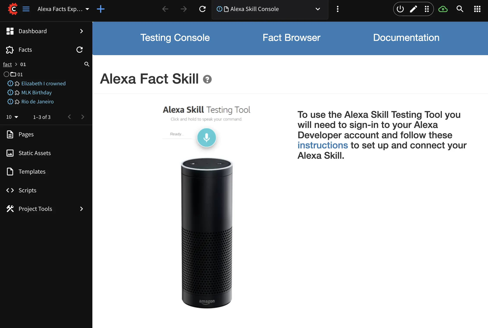

I built and wrote the documentation for this Alexa API blueprint website for my internship a couple of summers ago. This was a challenging project because I had very little programming experience prior to. I learned Groovy, APIs, requests, website security principles, and more in one summer.
This blueprint attracted interest and is used from the company's existing major enterprise customers like Papa John's, Marriott, and more.
<
Challenges
- Adjusting to daily scrums, learning how to use GitHub, onboarding with company technologies.
- Maximizing space and time efficiency for scalable enterprise use.
- Working within the AWS console and learning cloud computing principles.
Takeaways
- This project made working with other new technologies feel easier.
- Speed is key when it comes to content generation. I developed my skills in optimizing APIs and content delivery mechanisms.
- I gained intuition about algorithms and data structures, setting me up to understand them better in CMU's CS department.
Technologies Used:
- Amazon Alexa
- CrafterCMS
- Headless CMS
- API Integration
Learn More: